4 Wizualizacja danych
Przewodnik po wizualizacji danych
Będziemy działać na zbiorze dotyczącym sprzedaży w sklepach Rossmann.
library(tidyverse)
library(readxl)
rossmann <- read_xlsx("data/rossmann.xlsx")
sklep77 <- rossmann %>%
filter(sklep_id==77, czy_otwarty=="Tak")4.1 Wbudowane funkcje
Do prostych wykresów można wykorzystać wbudowaną funkcję plot.
plot(sklep77$sprzedaz, sklep77$liczba_klientow,
xlab = "Sprzedaż", ylab = "Liczba klientów",
main = "Sprzedaż i liczba klientów w sklepie Rossmann nr 77")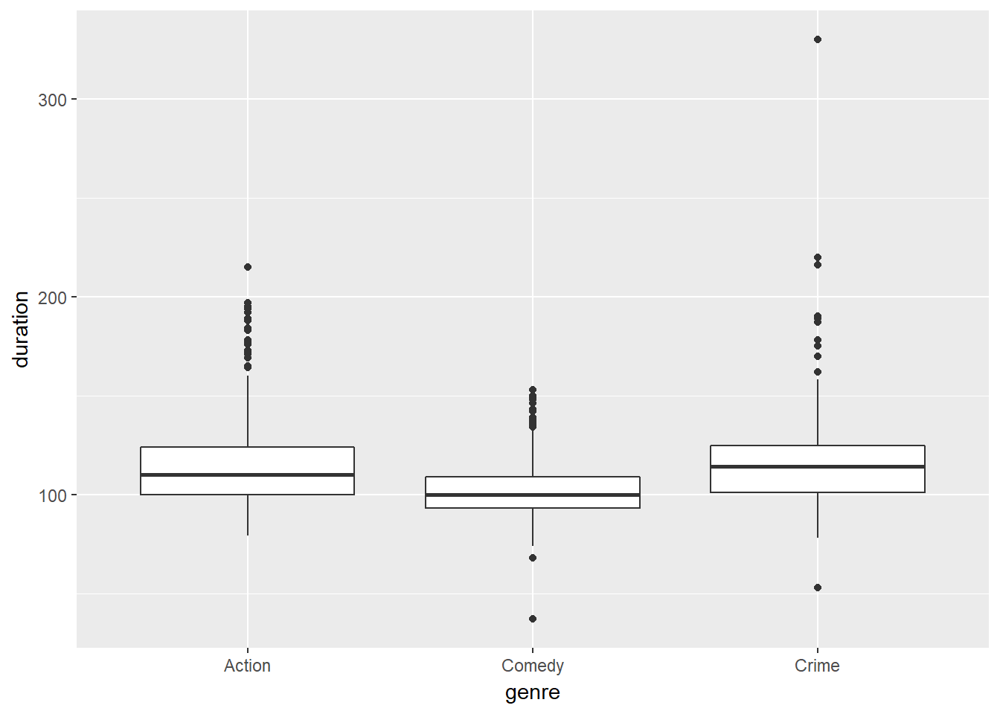
4.2 Pakiet ggplot2
Wiodący pakiet do wizualizacji danych:
- dokumentacja: https://ggplot2.tidyverse.org/
- cheatsheet
- tworzenie wykresów poprzez dodawanie (
+) kolejnych warstw
4.2.1 Wykres punktowy
Ten sam wykres co wcześniej, ale z wykorzystaniem pakietu ggplot2.
Wykonanie krok po kroku:
- Utworzenie siatki - określenie co chcemy na wykresie przedstawić
ggplot(data = sklep77, aes(x=sprzedaz, y=liczba_klientow))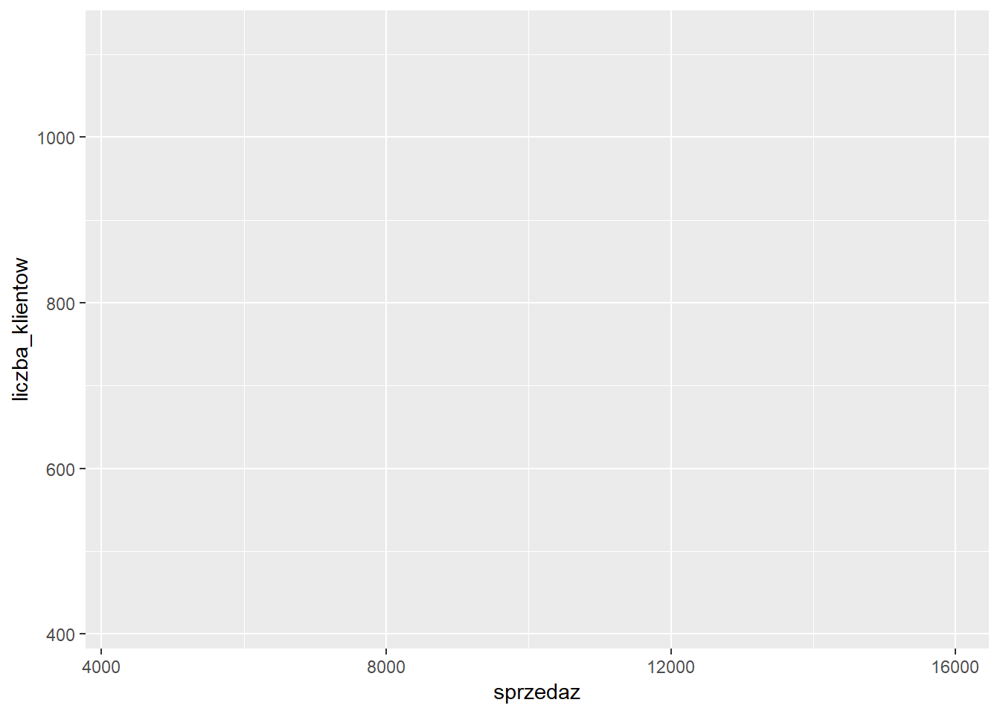
W zależności od typu wykresu w funkcji aes mogą znaleźć się argumenty:
- x
- y
- fill
- size
- color
- shape
- Określenie w jaki sposób chcemy te dane przedstawić - funkcja zawsze zaczyna się od
geom_:
ggplot(data = sklep77, aes(x=sprzedaz, y=liczba_klientow)) +
geom_point()- Edytowanie etykiet osi - funkcje
xlabiylab:
ggplot(data = sklep77, aes(x=sprzedaz, y=liczba_klientow)) +
geom_point() +
xlab("Sprzedaż") +
ylab("Liczba klientów")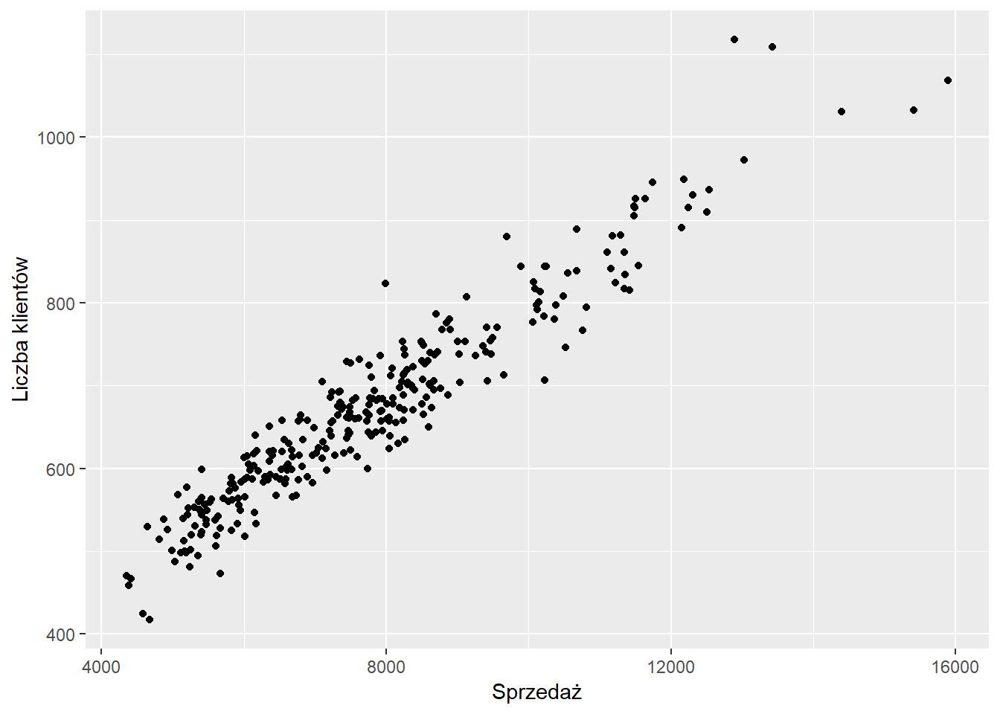
- Dodanie tytułu - funkcja
ggtitle
ggplot(data = sklep77, aes(x=sprzedaz, y=liczba_klientow)) +
geom_point() +
xlab("Sprzedaż") +
ylab("Liczba klientów") +
ggtitle("Sprzedaż i liczba klientów w sklepie Rossmann nr 77")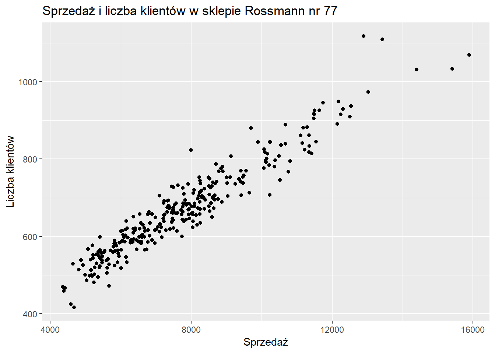
- Zmiana motywu - funkcja rozpoczynająca się od
theme_:
ggplot(data = sklep77, aes(x=sprzedaz, y=liczba_klientow)) +
geom_point() +
xlab("Sprzedaż") +
ylab("Liczba klientów") +
ggtitle("Sprzedaż i liczba klientów w sklepie Rossmann nr 77") +
theme_light()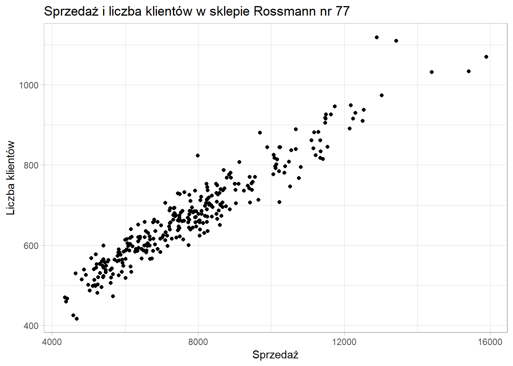
Dostępne motywy:
- theme_bw
- theme_classic
- theme_dark
- theme_gray
- theme_light
- theme_linedraw
- theme_minimal
- theme_void
Powyższe motywy są zaimplementowane w pakiecie ggplot2, ale można także skorzystać z dodatkowych pakietów:
Albo stworzyć swój własny motyw.
Zadanie
Zmień motyw wykresu na wybrany przez siebie.
Dodamy teraz do wykresu kolejną cechę - rozpoczęcie promocji, żeby sprawdzić czy istnieje jakaś tendencja.
ggplot(data = sklep77, aes(x=sprzedaz, y=liczba_klientow, color=czy_promocja)) +
geom_point() +
xlab("Sprzedaż") +
ylab("Liczba klientów") +
ggtitle("Sprzedaż i liczba klientów w sklepie Rossmann nr 77") +
theme_light()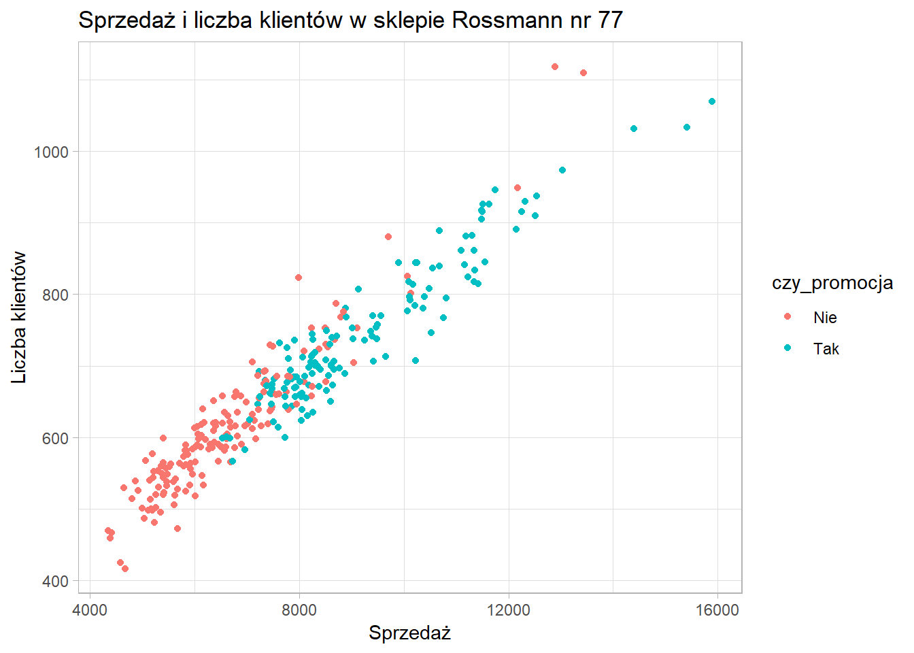
Okazuje się dosyć interesująco, niemniej nazwa etykiety legendy nie wygląda zbyt dobrze. Żeby to poprawić musimy użyć funkcji scale_
ggplot(data = sklep77, aes(x=sprzedaz, y=liczba_klientow, color=czy_promocja)) +
geom_point() +
xlab("Sprzedaż") +
ylab("Liczba klientów") +
scale_color_discrete(name = "Promocja") +
ggtitle("Sprzedaż i liczba klientów w sklepie Rossmann nr 77") +
theme_light()
W funkcji scale_ musimy podać w jaki sposób daną cechę wizualizujemy (x/y/color/…) oraz jakiego jest typu. Oprócz nazwy w tej funkcji możemy określić wiele innych kwestii takich jak:
- wyświetlane etykiety
- początek i koniec osi
- kolory wariantów
- etykiety wariantów
ggplot(data = sklep77, aes(x=sprzedaz, y=liczba_klientow, color=czy_promocja)) +
geom_point() +
scale_x_continuous(name = "Sprzedaż") +
scale_y_continuous(name = "Liczba klientów") +
scale_color_discrete(name = "Promocja") +
ggtitle("Sprzedaż i liczba klientów w sklepie Rossmann nr 77") +
theme_light()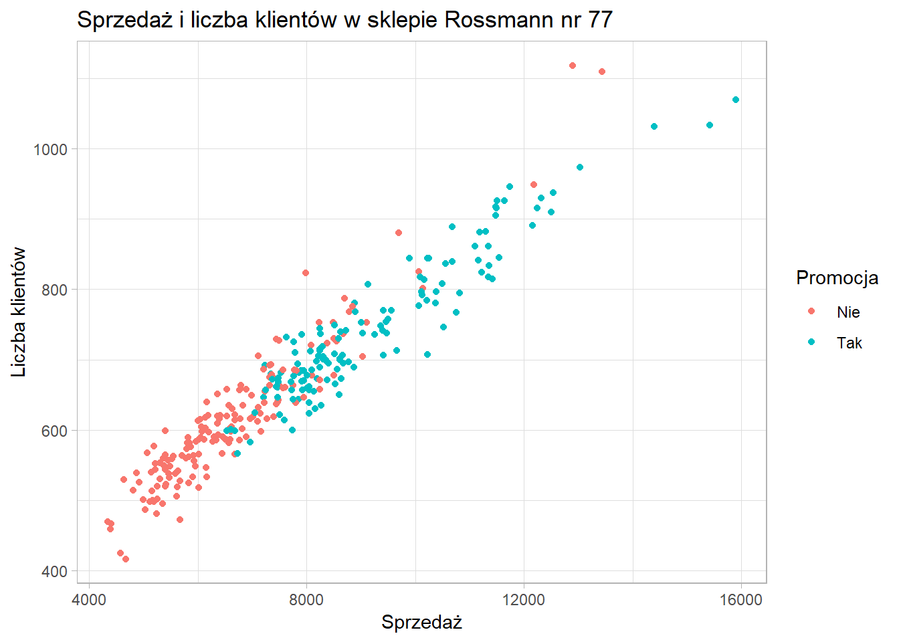
Zmiana pozycji legendy możliwa jest z wykorzystaniem funkcji theme:
ggplot(data = sklep77, aes(x=sprzedaz, y=liczba_klientow, color=czy_promocja)) +
geom_point() +
scale_x_continuous(name = "Sprzedaż") +
scale_y_continuous(name = "Liczba klientów") +
scale_color_discrete(name = "Promocja") +
ggtitle("Sprzedaż i liczba klientów w sklepie Rossmann nr 77") +
theme_light() +
theme(legend.position = "bottom")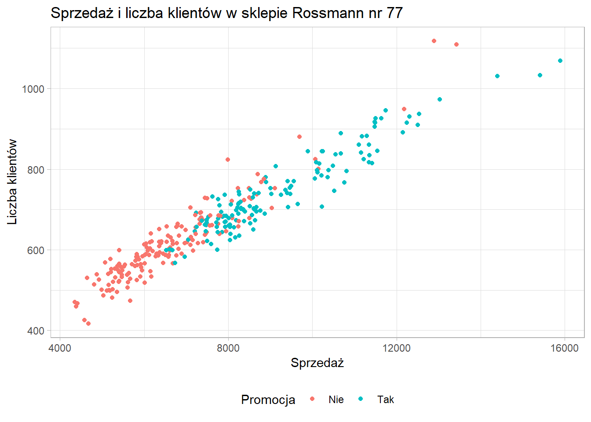
ggplot(data = sklep77, aes(x=sprzedaz, y=liczba_klientow, color=czy_promocja)) +
geom_point() +
geom_smooth(method = "lm") +
scale_x_continuous(name = "Sprzedaż") +
scale_y_continuous(name = "Liczba klientów") +
scale_color_discrete(name = "Promocja") +
ggtitle("Sprzedaż i liczba klientów w sklepie Rossmann nr 77") +
theme_light() +
theme(legend.position = "bottom")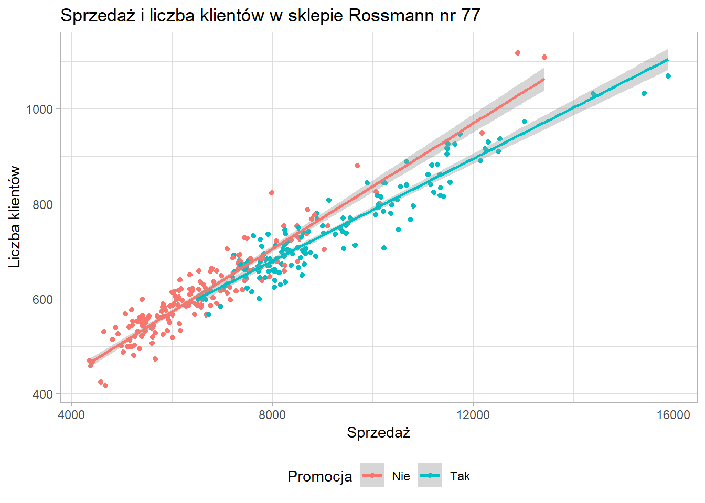
4.2.2 Histogram
Rozkład cechy można ocenić na podstawie histogramu - domyślnie rysowanych jest 30 słupków.
ggplot(data = sklep77, aes(x=sprzedaz)) +
geom_histogram()## `stat_bin()` using `bins = 30`. Pick better value with `binwidth`.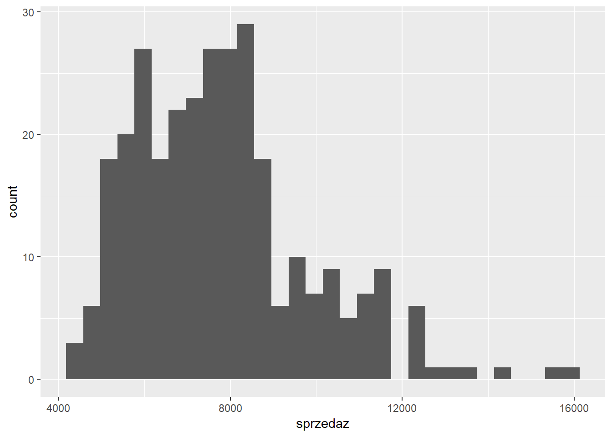
W funkcji geom_histogram można podać liczbę słupków (bins) albo ich szerokość (binwidth). Poniżej zastosowano słupki o szerokości 1000 euro.
ggplot(data = sklep77, aes(x=sprzedaz)) +
geom_histogram(binwidth = 1000)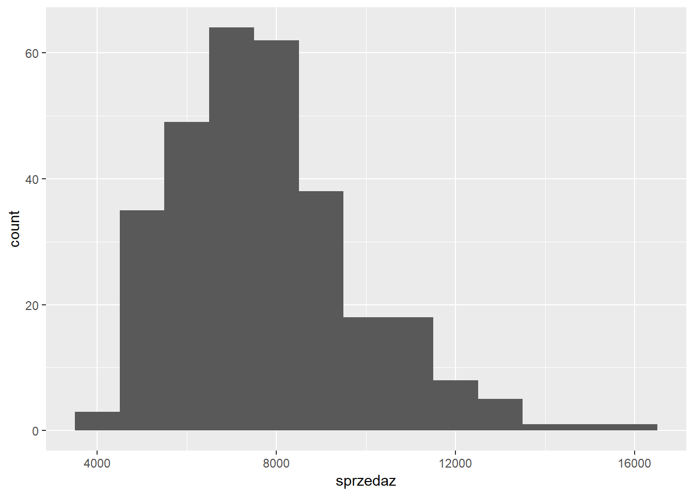
Dodatkowo w tej funkcji można określić kwestie estetyczne - kolory obramowania i wypełnienia słupków.
ggplot(data = sklep77, aes(x=sprzedaz)) +
geom_histogram(binwidth = 500, color = "black", fill = "green")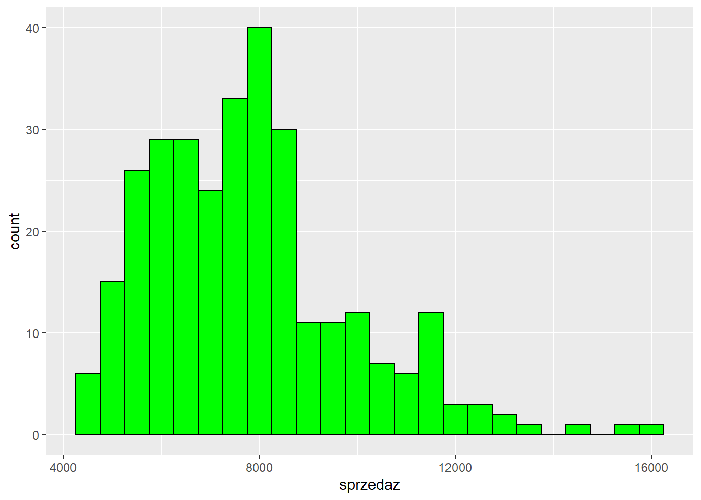
Pełna lista nazw kolorów znajduje się tutaj.
Z wykorzystaniem funkcji scale_ zmieniamy nazwy osi (name), granice (limits) oraz wskazania liczbowe (breaks). Te dwie ostatnie wartości musimy deklarować jako wektory z wykorzystaniem funkcji c().
ggplot(data = sklep77, aes(x=sprzedaz)) +
geom_histogram(binwidth = 500,
color = "black", fill = "green") +
scale_x_continuous(name = "Sprzedaż",
limits = c(4000,17000),
breaks = c(5000, 8000, 11000)) +
scale_y_continuous(name = "Liczebność",
limits = c(0,50))## Warning: Removed 2 rows containing missing values (geom_bar).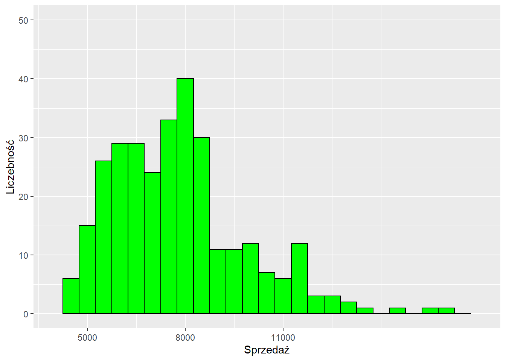
Można zaumatyzować proces dobierania wskazań liczbowych z wykorzystaniem funkcji seq opisanej szerzej w rozdziale 2.1.2.
ggplot(data = sklep77, aes(x=sprzedaz)) +
geom_histogram(binwidth = 500,
color = "black", fill = "green") +
scale_x_continuous(name = "Sprzedaż",
limits = c(4000,17000),
breaks = seq(4000, 17000, 1500)) +
scale_y_continuous(name = "Liczebność",
limits = c(0,50))## Warning: Removed 2 rows containing missing values (geom_bar).4.2.3 Wykres pudełkowy
Wykres pudełkowy umożliwia porównywanie rozkładów cechy wg zmiennej grupującej. Wymogiem jest aby na osi x znajdowała się zmienna grupująca, a na osi y cecha analizowana.
Przeanalizujemy sprzedaż według kolejnych dni tygodnia.
ggplot(sklep77, aes(x=dzien_tyg, y=sprzedaz)) + geom_boxplot()## Warning: Continuous x aesthetic -- did you forget aes(group=...)?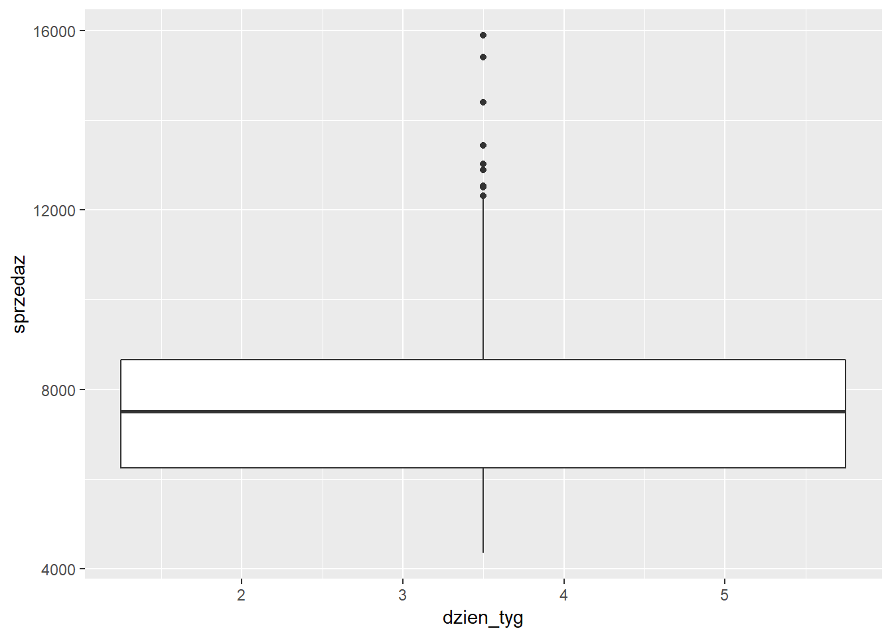
Zdecydowanie nie jest wykres jakiego oczekiwaliśmy. Wynika to z faktu, że dzień tygodnia w zbiorze danych jest zapisany jako zmienna numeryczna, natomiast prawidłowym typem dla zmiennej grupującej jest typ tekstowy lub czynnik (faktor). Ten typ danych został szczegółowo opisany w części 2.3.
Dokonujemy zatem zamiany typu danych:
sklep77 <- sklep77 %>%
mutate(dzien_tyg=factor(x = dzien_tyg,
levels = 1:6,
labels = c("Pon", "Wt", "Śr", "Czw", "Pt", "Sob"),
ordered = TRUE))
ggplot(sklep77, aes(x=dzien_tyg, y=sprzedaz)) +
geom_boxplot() 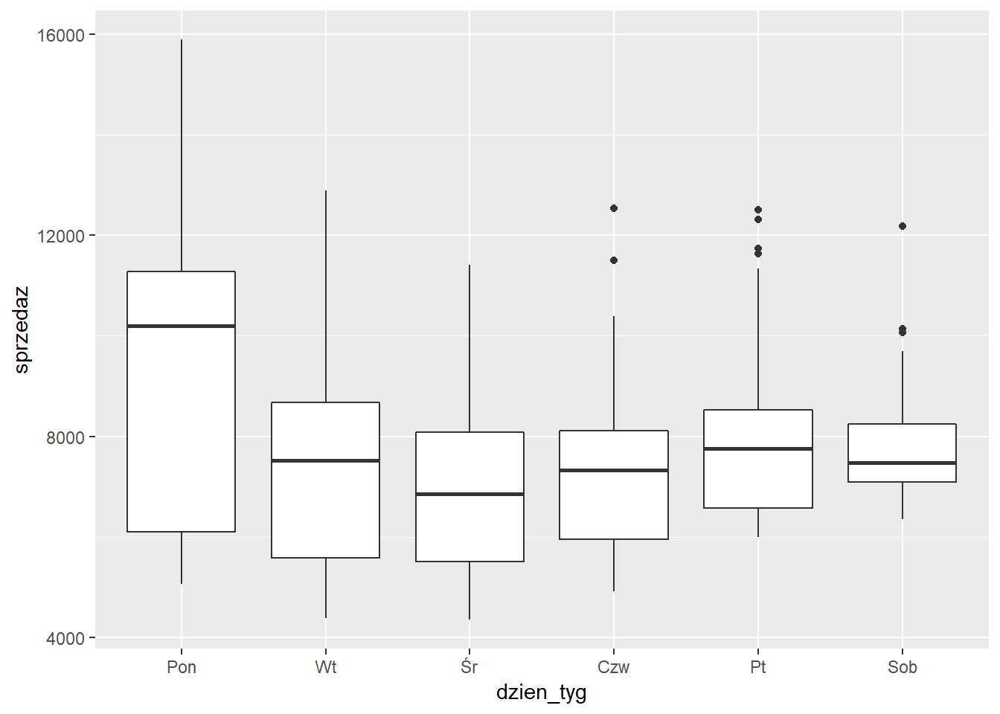
Z tego wykresu można już odczytać, że najwyższa mediana sprzedaży występuje w poniedziałek, a najniższa w środę.
Jeżli kategorii jest dużo to można obrócić wykres z wykorzystaniem funkcji coord_flip.
ggplot(sklep77, aes(x=dzien_tyg, y=sprzedaz)) +
geom_boxplot() +
coord_flip()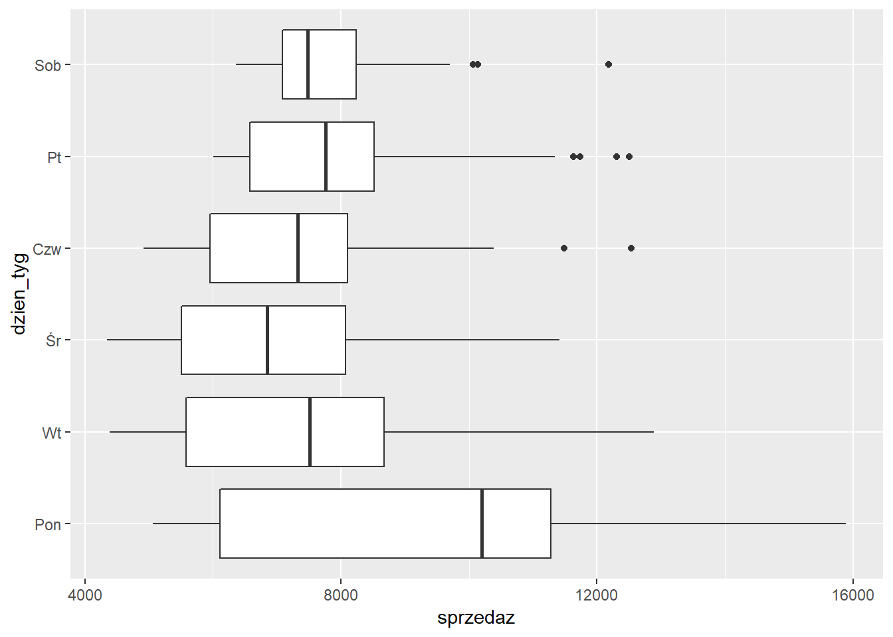
Użycie tej funkcji powoduje wyłącznie obrócenie wykresu. Nazwy osi nie uległy zmianie pomimo, że zostały zamienione. Odwrócimy jeszcze kolejność etykiet dnia tygodnia, tak aby na górze był poniedziałek.
ggplot(sklep77, aes(x=dzien_tyg, y=sprzedaz)) +
geom_boxplot() +
coord_flip() +
scale_x_discrete(limits = rev(levels(sklep77$dzien_tyg)))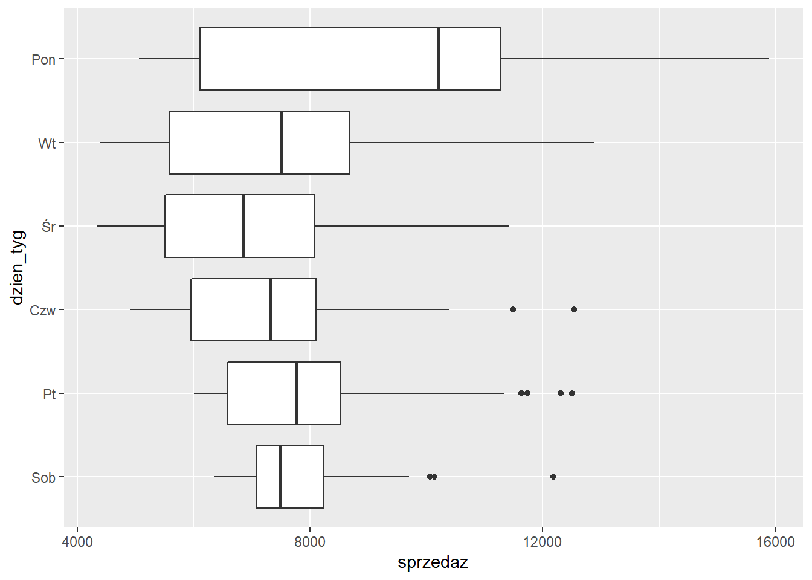
4.2.4 Wykres słupkowy
W zależności od typu danych wejściowych, wykres słupkowy można stworzyć na dwa sposoby:
- dane jednostkowe -
geom_bar- funkcja sama oblicza wartości do wyświetlenia, - dane zagregowane -
geom_col- funkcja otrzymuje już obliczone wartości.
Sprawdźmy ile jest sklepów o danym asortymencie. W tym celu potrzebujemy informację o sklepie i typie oferowanego asortymentu.
rossmann_asort <- rossmann %>%
select(sklep_id, sklep_asort) %>%
distinct()
glimpse(rossmann_asort)## Observations: 1,115
## Variables: 2
## $ sklep_id <dbl> 1, 2, 3, 4, 5, 6, 7, 8, 9, 10, 11, 12, 14, 15, 16,...
## $ sklep_asort <chr> "Podstawowy", "Podstawowy", "Podstawowy", "Rozszer...W funkcji aes podajemy tylko kolumnę zawierającą dane do zliczenia.
ggplot(rossmann_asort, aes(x=sklep_asort)) +
geom_bar()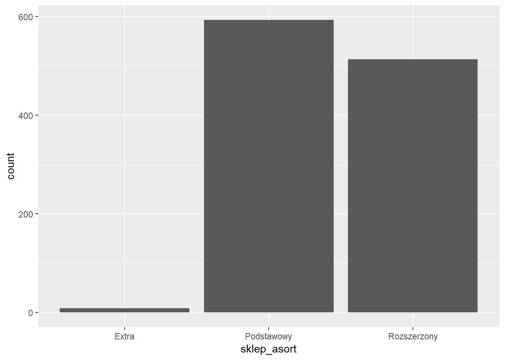
Natomiast użycie funkcji geom_col wymaga samodzielnego obliczenia wartości:
rossmann_asort2 <- rossmann_asort %>%
count(sklep_asort)
glimpse(rossmann_asort2)## Observations: 3
## Variables: 2
## $ sklep_asort <chr> "Extra", "Podstawowy", "Rozszerzony"
## $ n <int> 9, 593, 513Wartość do wyświetlenia podajemy w funkcji aes w argumencie y.
ggplot(rossmann_asort2, aes(x=sklep_asort, y=n)) +
geom_col()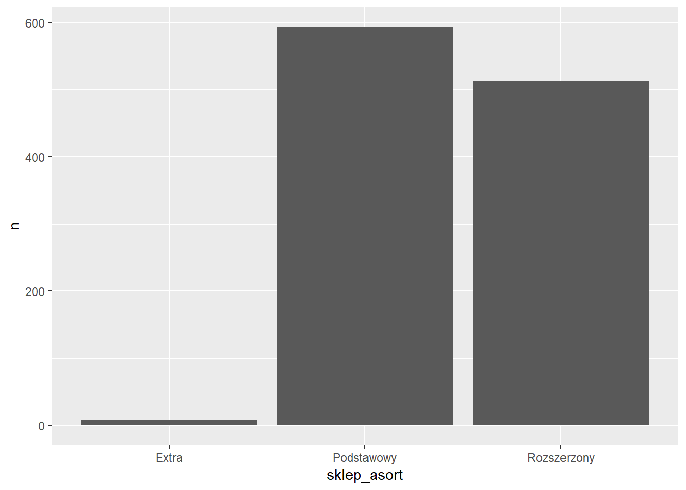
Uporządkujemy etykiety osi x (obecnie są wyświetlane w kolejności alfabetycznej) tworząc czynnik.
rossmann_asort2 <- rossmann_asort2 %>%
mutate(sklep_asort=factor(x = sklep_asort,
levels = c("Podstawowy",
"Rozszerzony",
"Extra"),
ordered = T))
glimpse(rossmann_asort2)## Observations: 3
## Variables: 2
## $ sklep_asort <ord> Extra, Podstawowy, Rozszerzony
## $ n <int> 9, 593, 513ggplot(rossmann_asort2, aes(x=sklep_asort, y=n)) +
geom_col()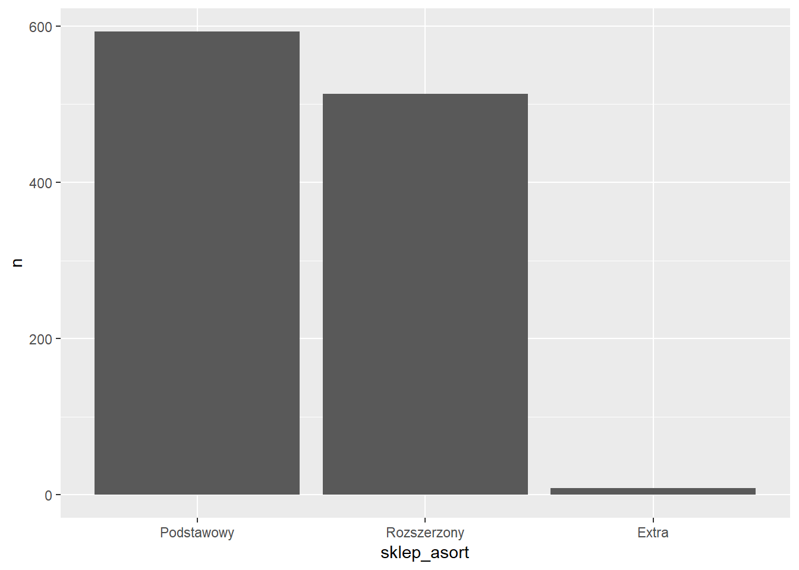
Do wykresu słupkowego możemy dodać jeszcze jedną zmienną. W tym przypadku będzie to typ sklepu.
rossmann_asort3 <- rossmann %>%
select(sklep_id, sklep_asort, sklep_typ) %>%
distinct() %>%
count(sklep_asort, sklep_typ) %>%
mutate(sklep_asort=factor(x = sklep_asort,
levels = c("Podstawowy",
"Rozszerzony",
"Extra"),
ordered = T))
glimpse(rossmann_asort3)## Observations: 9
## Variables: 3
## $ sklep_asort <ord> Extra, Podstawowy, Podstawowy, Podstawowy, Podstaw...
## $ sklep_typ <chr> "b", "a", "b", "c", "d", "a", "b", "c", "d"
## $ n <int> 9, 381, 7, 77, 128, 221, 1, 71, 220Uwzględnienie kolejnej zmiennej jest możliwe jako argument fill w funkcji aes.
ggplot(rossmann_asort3, aes(x=sklep_asort, y=n, fill=sklep_typ)) +
geom_col()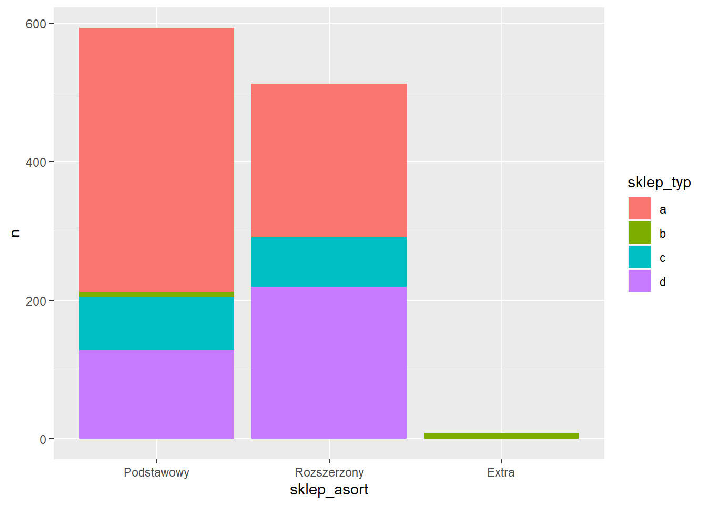
Domyślnie kategorie są układane jedna na drugą - stack. Można je ułożyć obok siebie dodając argument position = "dodge" w funkcji geom_col.
ggplot(rossmann_asort3, aes(x=sklep_asort, y=n, fill=sklep_typ)) +
geom_col(position = "dodge")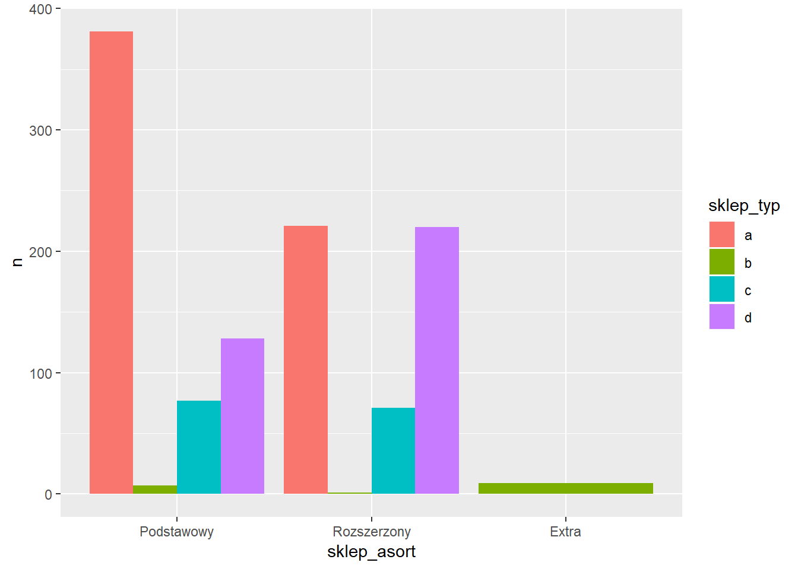
Możemy jeszcze dodać etykiety słupków wykorzystując funkcję geom_text, w której trzeba podać argumenty definujące położenie wartości etykiet. Wartości tych argumentów będą zależały od typu wykresu.
ggplot(rossmann_asort3, aes(x=sklep_asort, y=n, fill=sklep_typ)) +
geom_col(position = "dodge") +
geom_text(aes(label = n),
position = position_dodge(width = 0.9),
vjust = -0.3)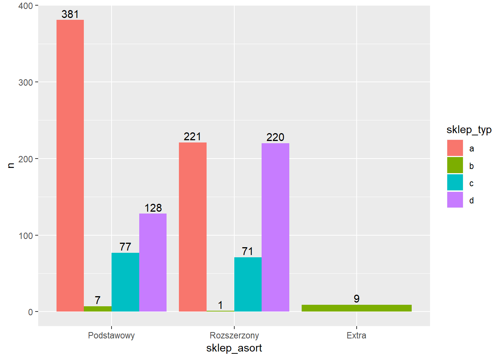
Zmienimy jeszcze nazwę legendy za pomocą funkcji scale_fill_discrete. Wykorzystujemy tę konkretną funkcję ze względu na to, że typ sklepu jest argumentem fill w funkcji aes oraz cechą jakościową (discrete).
ggplot(rossmann_asort3, aes(x=sklep_asort, y=n, fill=sklep_typ)) +
geom_col(position = "dodge") +
geom_text(aes(label = n),
position = position_dodge(width = 0.9),
vjust = -0.3) +
scale_fill_discrete(name = "Typ sklepu")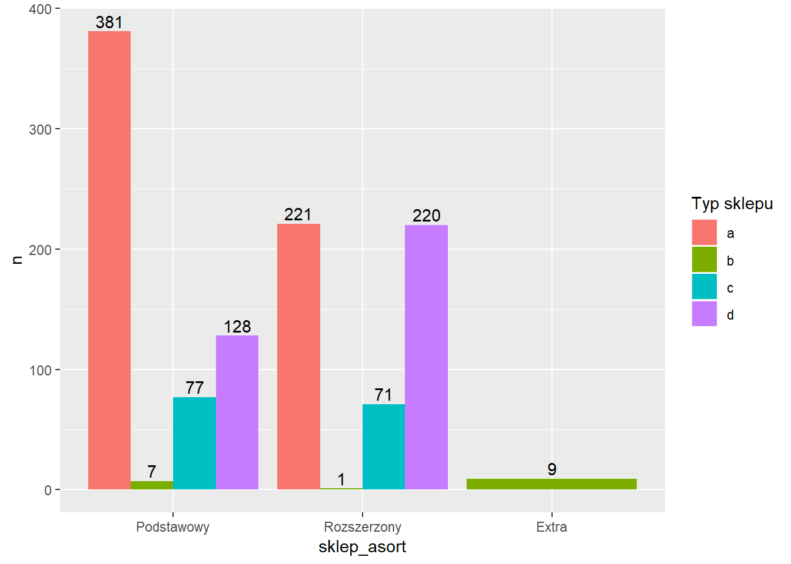
4.2.5 Wykres kafelkowy
- czy promocja i czy swieto szkolne
4.2.6 Uwzględnienie czasu
- sprzedaż w kolejnych dniach
4.2.7 Facets
sr_sprzedaz <- rossmann %>%
filter(sprzedaz > 0) %>%
group_by(sklep_id, sklep_asort) %>%
summarise(sprzedaz_sr=mean(sprzedaz))
odleglosc <- rossmann %>%
select(sklep_id, sklep_konkurencja) %>%
distinct()
sprzedaz_odleglosc <- inner_join(sr_sprzedaz, odleglosc, by="sklep_id")
ggplot(sprzedaz_odleglosc, aes(x=sprzedaz_sr, y=sklep_konkurencja)) +
geom_point() +
facet_wrap(~ sklep_asort)## Warning: Removed 3 rows containing missing values (geom_point).
sr_sprzedaz_prom <- rossmann %>%
filter(sprzedaz > 0) %>%
group_by(sklep_id, czy_promocja) %>%
summarise(sprzedaz_sr=mean(sprzedaz))
sprzedaz_prom_odl <- inner_join(sr_sprzedaz_prom, odleglosc)## Joining, by = "sklep_id"head(sprzedaz_prom_odl)## # A tibble: 6 x 4
## # Groups: sklep_id [3]
## sklep_id czy_promocja sprzedaz_sr sklep_konkurencja
## <dbl> <chr> <dbl> <dbl>
## 1 1 Nie 4288. 1270
## 2 1 Tak 5274. 1270
## 3 2 Nie 3902. 570
## 4 2 Tak 6295. 570
## 5 3 Nie 5286. 14130
## 6 3 Tak 8790. 14130ggplot(sprzedaz_prom_odl, aes(x=sprzedaz_sr, y=sklep_konkurencja, color=czy_promocja)) +
geom_point()## Warning: Removed 6 rows containing missing values (geom_point).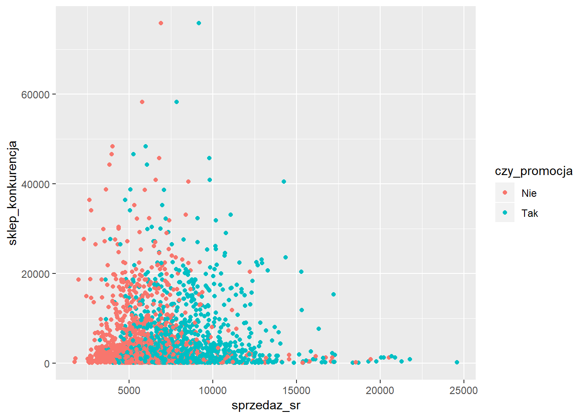
Zamiana reprezentacji danych na szeroką.
sprzedaz_prom_odl_wide <- sprzedaz_prom_odl %>%
spread(czy_promocja, sprzedaz_sr)
head(sprzedaz_prom_odl_wide)## # A tibble: 6 x 4
## # Groups: sklep_id [6]
## sklep_id sklep_konkurencja Nie Tak
## <dbl> <dbl> <dbl> <dbl>
## 1 1 1270 4288. 5274.
## 2 2 570 3902. 6295.
## 3 3 14130 5286. 8790.
## 4 4 620 9030. 10686.
## 5 5 29910 3473. 6084.
## 6 6 310 4189. 6295.I na wąską.
sprzedaz_prom_odl_long <- sprzedaz_prom_odl_wide %>%
gather(czy_promocja, sprzedaz_sr, Nie, Tak)
head(sprzedaz_prom_odl_long)## # A tibble: 6 x 4
## # Groups: sklep_id [6]
## sklep_id sklep_konkurencja czy_promocja sprzedaz_sr
## <dbl> <dbl> <chr> <dbl>
## 1 1 1270 Nie 4288.
## 2 2 570 Nie 3902.
## 3 3 14130 Nie 5286.
## 4 4 620 Nie 9030.
## 5 5 29910 Nie 3473.
## 6 6 310 Nie 4189.4.3 Pakiet plotly
p <- ggplot(data = sklep77, aes(x=sprzedaz, y=liczba_klientow, color=czy_promocja)) +
geom_point() +
scale_x_continuous(name = "Sprzedaż") +
scale_y_continuous(name = "Liczba klientów") +
scale_color_discrete(name = "Promocja") +
ggtitle("Sprzedaż i liczba klientów w sklepie Rossmann nr 77") +
theme_light() +
theme(legend.position = "bottom")
plotly::ggplotly(p)Zadanie
Stwórz trzy grafiki dla danych dotyczących filmów.
filmy <- read.csv("data/movies.csv")
summary(filmy)## title genre
## Home : 3 Comedy :848
## A Nightmare on Elm Street : 2 Action :738
## Across the Universe : 2 Drama :498
## Alice in Wonderland : 2 Adventure:288
## Aloha : 2 Crime :202
## Around the World in 80 Days: 2 Biography:135
## (Other) :2948 (Other) :252
## director year duration
## Steven Spielberg : 23 Min. :1920 Min. : 37.0
## Clint Eastwood : 19 1st Qu.:1999 1st Qu.: 95.0
## Martin Scorsese : 16 Median :2004 Median :106.0
## Tim Burton : 16 Mean :2003 Mean :109.6
## Spike Lee : 15 3rd Qu.:2010 3rd Qu.:119.0
## Steven Soderbergh: 15 Max. :2016 Max. :330.0
## (Other) :2857
## gross budget cast_facebook_likes
## Min. : 703 Min. : 218 Min. : 0
## 1st Qu.: 12276810 1st Qu.: 11000000 1st Qu.: 2241
## Median : 34703228 Median : 26000000 Median : 4604
## Mean : 58090401 Mean : 40619384 Mean : 12394
## 3rd Qu.: 75590286 3rd Qu.: 55000000 3rd Qu.: 16926
## Max. :760505847 Max. :300000000 Max. :656730
##
## votes reviews rating
## Min. : 5 Min. : 2.0 Min. :1.600
## 1st Qu.: 19918 1st Qu.: 199.0 1st Qu.:5.800
## Median : 55749 Median : 364.0 Median :6.500
## Mean : 109308 Mean : 503.3 Mean :6.389
## 3rd Qu.: 133348 3rd Qu.: 631.0 3rd Qu.:7.100
## Max. :1689764 Max. :5312.0 Max. :9.300
## Z racji mnogości gatunków można ograniczyć się do kilku wybranych.